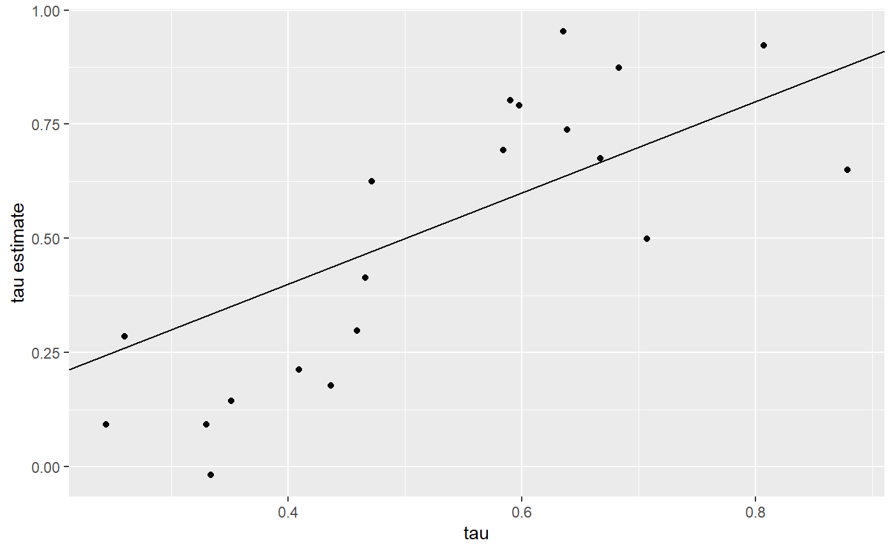
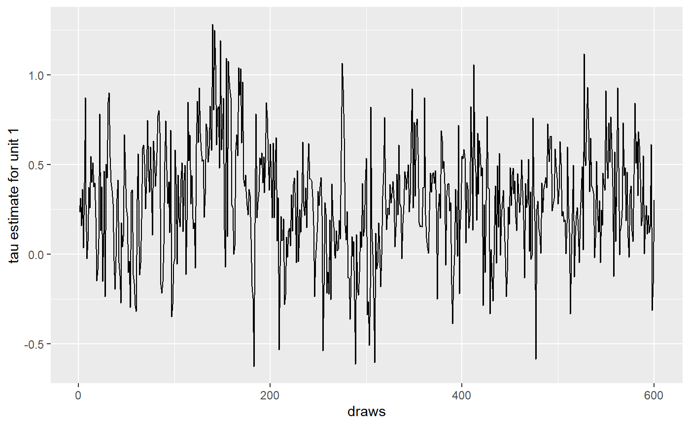
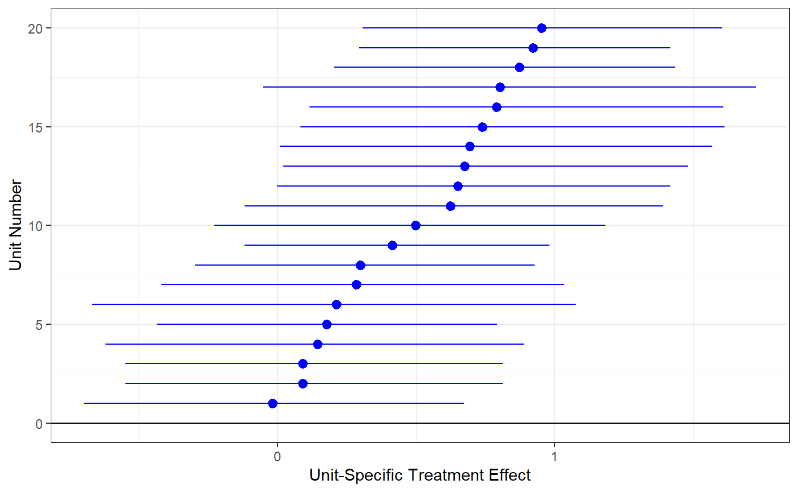
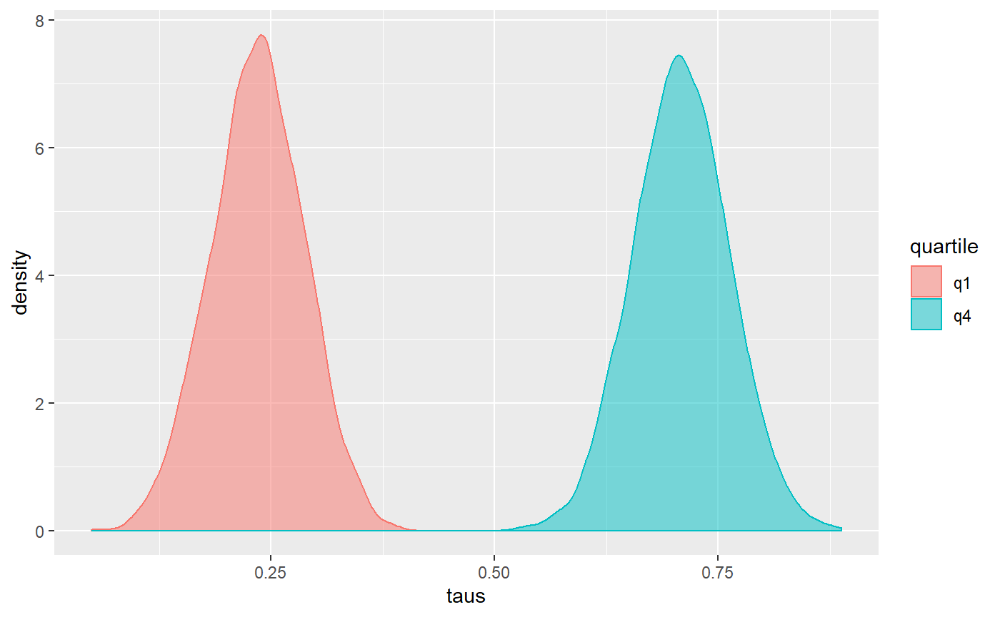

simple-example.RmdIn this vignette, we show how to use BCF to estimate treatment effects of a simulated intervention.
library(bcf2)
#> Warning: replacing previous import 'Rcpp::LdFlags' by 'RcppParallel::LdFlags'
#> when loading 'bcf2'
#>
#> Attaching package: 'bcf2'
#> The following object is masked from 'package:stats':
#>
#> predict
library(ggplot2)
library(latex2exp)
library(rpart)
library(rpart.plot)First, we simulate some data for testing. This data set has three covariates \(X\), which we divide into two control variables (that is, two covariates related to the outcome, \(y\)) and one effect moderator (that is, a covariates related to the treatment effect, \(\tau\)).
We draw three random \(X\)s for each unit and generate each unit’s expected outcome without treatment, \(\mu_i\), as a function of \(x^{(1)}_i\) and \(x^{(2)}_i\). Each unit’s probability of joining the intervention, \(\pi_i\), is also a function of \(\mu_i\), so that units with larger responses are more likely to participate in the intervention. We then assign units to treatment (\(z_i = 1\)) or comparison (\(z_i = 0\)) as a function of \(\pi_i\).
Then we generate the true treatment effect for each unit, \(\tau_i\). As noted above, \(\tau_i\) is a function of \(x^{(3)}_i\). The observed outcome, \(y_i\), is a function of \(\mu_i\), \(\tau_i\), a random error term with variance \(\sigma^{2}\), and weights \(w\) if applicable.
set.seed(1)
p <- 3 # two control variables and one effect moderator
n <- 1000
n_burn <- 2000
n_sim <- 1000
x <- matrix(rnorm(n*p), nrow=n)
weights <- abs(rnorm(n))
# create targeted selection, whereby a unit's likelihood of joining the intervention (pi) is related to its expected outcome (mu)
q <- -1*(x[,1]>(x[,2])) + 1*(x[,1]<(x[,2])) -0.1
# generate treatment variable
pi <- pnorm(q)
z <- rbinom(n,1,pi)
# tau is the true treatment effect; it varies across units as a function of
# X3, the effect moderator
tau <- 1/(1 + exp(-x[,3]))
# generate the response using q, tau and z
mu <- (q + tau*z)
# set the noise level relative to the expected mean function of Y
sigma <- diff(range(q + tau*pi))/8
# draw the response variable with additive error
y <- mu + sigma*rnorm(n)/sqrt(weights)In this data set we have observed \(y_i\), \(x_i\), and \(\pi_i\) values to which we can fit our BCF model. We can then compare the \(\hat{\tau}_i\) estimates from BCF to the true \(\tau_i\) from the data-generating process. Note that we are using the n_chains and ‘n_chain_clusters’ arguments to bcf(), which allow us to run several MCMC chains in parallel and assess whether they have converged to the posterior distribution.
We use the summarise_bcf function to obtain posterior summary stats and MCMC diagnostics. We uses those diagnostics to assess convergence of our run.
bcf2::summarise_bcf(bcf_out)
#> Summary statistics for each Markov Chain Monte Carlo run
#>
#> Iterations = 1:1000
#> Thinning interval = 1
#> Number of chains = 4
#> Sample size per chain = 1000
#>
#> 1. Empirical mean and standard deviation for each variable,
#> plus standard error of the mean:
#>
#> Mean SD Naive SE Time-series SE
#> sigma 0.33332 0.007795 0.0001232 0.0001378
#> tau_bar 0.46840 0.034902 0.0005519 0.0009617
#> mu_bar -0.08748 0.020434 0.0003231 0.0006031
#> yhat_bar 0.12988 0.011666 0.0001845 0.0001845
#>
#> 2. Quantiles for each variable:
#>
#> 2.5% 25% 50% 75% 97.5%
#> sigma 0.3183 0.3279 0.33332 0.33858 0.34891
#> tau_bar 0.4013 0.4446 0.46860 0.49219 0.53733
#> mu_bar -0.1268 -0.1015 -0.08731 -0.07387 -0.04683
#> yhat_bar 0.1062 0.1222 0.12987 0.13775 0.15254
#>
#>
#> ----
#> Effective sample size for each parameter
#> sigma tau_bar mu_bar yhat_bar
#> 3290.455 1323.737 1158.787 4000.000
#>
#> ----
#> Gelman and Rubin's convergence diagnostic for each parameter
#> Potential scale reduction factors:
#>
#> Point est. Upper C.I.
#> sigma 1.00 1.01
#> tau_bar 1.00 1.00
#> mu_bar 1.01 1.03
#> yhat_bar 1.00 1.00
#>
#> Multivariate psrf
#>
#> 1.02
#>
#> ----Since our “\(\hat{R}\)” values (Gelman and Rubin’s convergence statistics, which equal to 1 at convergence) are between 0.9 and 1.1, we know that our run successfully achieved convergence.
Now that we’ve successfully fit our model, let’s expore the output. First, since this is a simulation, let’s compare the unit-speciifc treatment effect estimates \(\hat{\tau}_i\) to the true unit-specific treatment effects \(\tau_i\).
In the plot below, the red line is the identity line and the blue line is a regression line fitted through our points.
ggplot(NULL, aes(x = tau, y = colMeans(bcf_out$tau))) +
geom_smooth(method = "lm", se = FALSE) +
geom_abline(color = "red") +
geom_point() +
xlab(TeX("True unit-specific treatment effect ($\\tau_i$)")) +
ylab(TeX("Estimate (posterior mean) of unit-specific treatment effect ($\\hat{\\tau_i}$)")) +
xlim(0, 1) +
ylim(0, 1)
BCF recovers the true unit-specific treatment effects with a high degree of accuracy in this simple example.
Now that we have confidence in BCF’s estimates of unit-specific treatment effects, we examine the results more closely. First we consider the distribution of unit-specific treatment effects, to assess treatment effect heterogeneity across units. This plot shows the impact estimate and 95 percent credible interval for each unit, arranged by the size of the impact.
tau_ests <- data.frame(Mean = colMeans(bcf_out$tau),
Low95 = apply(bcf_out$tau, 2, function(x) quantile(x, 0.025)),
Up95 = apply(bcf_out$tau, 2, function(x) quantile(x, 0.975)))
tau_ests <- tau_ests[order(tau_ests$Mean), ]
tau_ests[, "unit"] <- 1:ncol(bcf_out$tau)
ggplot(tau_ests, aes(x = unit, y = Mean)) +
theme_bw() +
geom_pointrange(aes(ymin = Low95, ymax = Up95), color = "blue") +
geom_vline(xintercept = 0, color = "black") +
ylab("Estimate of unit-specific treatment effect (posterior mean and 95% CI)") +
xlab("Unit") +
coord_flip()
In this example, although we do see variation in the point estimates across units, most uncertainty intervals overlap, except for units at the extremes.
The BCF model obtains more accurate treatment effect estimates than other approaches in part by allowing flexible relationships with many possible effect modifiers. These relationships are often of substantive interest; researchers want to know what covariates are associated with higher or lower impacts. However, the BCF model is difficult to interpret directly: we cannot simply look at the coefficients on the effect modifiers to determine which characteristics drive the impacts. Instead, we can look for patterns in the unit-specific treatment effects, linking each unit’s treatment effect estimate to its covariates.
Specifically, the BCF paper (https://arxiv.org/pdf/1706.09523.pdf) recommends fitting a CART model where the response variable is the estimated unit-specific treatment effect from BCF and the predictor variables are the effect modifiers used to fit the BCF model. The resulting tree identifies covariates that best distinguish units with high vs. low impacts, which are strong candidate subgroup variables.

Our tree identifies \(x_3\) as the strongest effect modifier, which is correct, because we specified it as such in the data generation step.
Because the CART fit does not account for the uncertainty in the treatment effect estimates, it is possible that its tree splits do not identify characteristics that create subgroups with meaningfully different impacts. To conduct inference on whether impacts differ meaningfully based on a characteristic, we can use the posterior draws from the fitted BCF model.
Here we show just a comparison of the average treatment effect for units in the top quartile of \(X_3\) vs. the average treatment effect for units in the bottom quartile of \(X_3\).
q1 <- x[,3] < quantile(x[,3], 0.25)
q4 <- x[,3] > quantile(x[,3], 0.75)
q1Taus <- bcf_out$tau[,q1]
q4Taus <- bcf_out$tau[,q4]
wq1Taus <- apply(q1Taus, 1, weighted.mean, weights[q1])
wq4Taus <- apply(q4Taus, 1, weighted.mean, weights[q4])
groupTaus <- data.frame(taus = c(wq1Taus, wq4Taus),
quartile = c(rep("q1", 4*n_sim), rep("q4", 4*n_sim)))
ggplot(groupTaus, aes(taus, fill = quartile, color = quartile)) +
geom_density(alpha = 0.5)
The posterior distributions for the average treatment effect of the top- and bottom-quartile units do not overlap.
We would therefore conclude that \(X_3\) is an important subgroup variable. We can confirm this by computing the probability that the average treatment effect for the top-quartile units (q4) is greater than the average treatment effect for the bottom-quartile units (q1).
We found that there is a 100% probability that treatment effects for the top quartile (q4) are greater than those for the bottom quartile (q1).